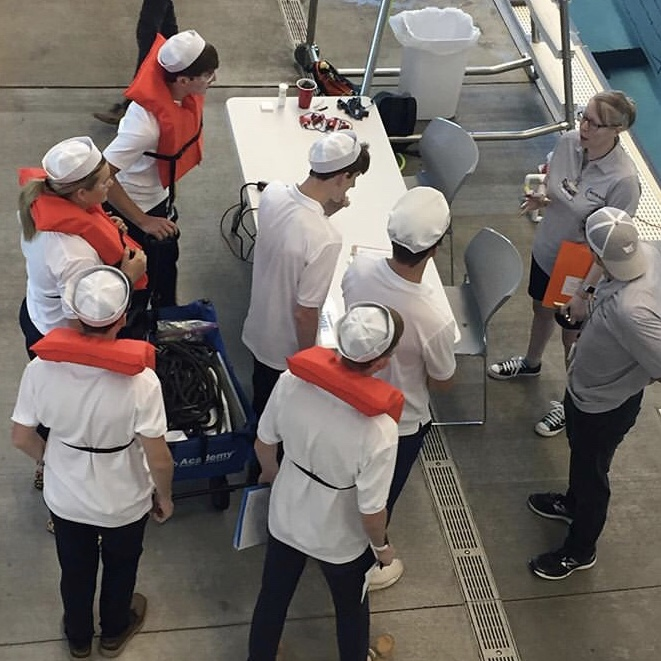
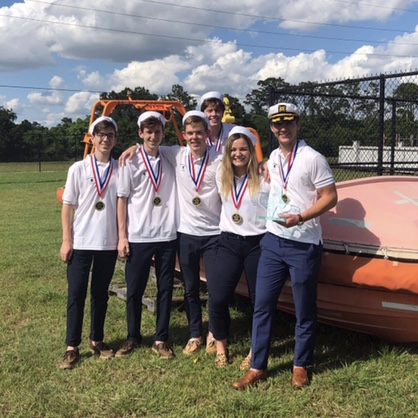
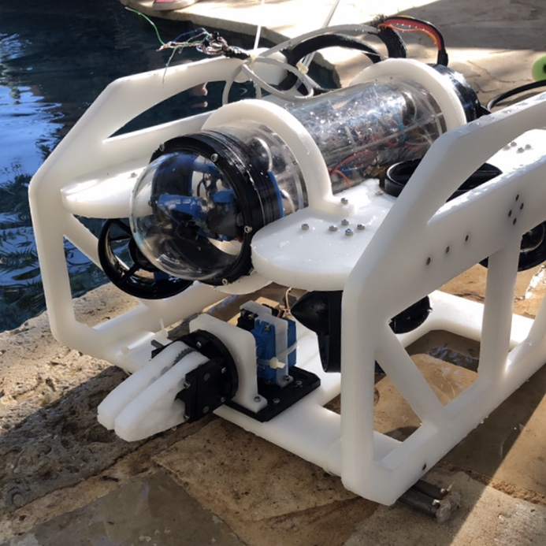

×
I high school I began competing with a local club robotics team in the Marine Advanced Technologies Education, or MATE, competitions. With this team, I help design, build, and program an underwater ROV, capable of completing precision tasks as efficiently as possible.
I served the team as the Chief Technical Officer, carrying out majority of the electrical and programming work, and later as the Chief Executive Officer, retaining my past duties while also leading the team meetings and members task progressions.



Our robot was designed around a task briefing resleased by MATE each year. Some of the task included detecting object composition, recognizing species, nagiviagting small spaces, and lifting large objects. Our ROV was designed with aspects built in to take on each mission. Our robot, "Frosty," was equipped with a 1080p HD, low-light camera, allowing it to see clearly it dark waters. It was tethered to a computer at the surface taking input from an Xbox controller. Our software could manipulate the input and send signals to the ROV several yards away. To complete most missions, Frosty had a worm gear driven claw, giving it high torque and an inability to back out. It also had mission specific add-ons, such as a micro ROV that could be deployed from inside the body to naviagte the smaller spaces. The micro ROV was tether to the primary and was equipped with a camera and motor that could be viewed and controlled from the surface. Frosty had many mission specific hardware, but was also equipped with mission specific software, such as image recognition software and autonomous driving.
In my roles as Chief Technical Officer, I did a lot of the electrical and programming work. I designed, CADed, and assembled our electrical system, featuring a top end set up, and a brain on the ROV. At the top end, a laptop controller most of the function of the robot. A Xbox controller connected to the computer to take inputs from the driver, which then ran through a software called QGroundControl, a software designed for fpv drones, changed the input for the ROV to run. The computer then connected to a set of board that converted the data into a two wire connection that could be tethered the the ROV. In the brain of the ROV, the data was unpacked via a raspberry pi and drone flight controller. This electronic set up allowed our ROV to be very adaptable to any tasks that required addition or programable features. Some addition that I made to the ROV programming include a shape recognition code, which used Python and the OpenCV library to take images from the camera, recognize the shapes, and return the count, an autonomous flight code, which used an interface inside of QGroundControl, Python, and more OpenCV to recognize the area it needed to operate in and controller the thruster outputs, and lastly a more complex recognition program that was never used in competition due to the season be cancelled for Covid.
One of the many softwares I wrote for this competition was a simple image recognition software that used the camera output to recognize and return a count of shapes. This software can be found here.
In competition, our ROV was piloted by a main pilot and a co-pilot. I often served as the co-pilot, reading out data, mission plans, and controlling the micro ROV. Our team placed first at our Texas Regional and placed as high as 18th, among approximately 100 teams, at the MATE World Championships.
This project gave me the chance to collaborate with a team on a common goal, and later on practice my leadership skills leading a team. It also allowed me to work with new types of software and libraries.
 Home Projects Resume
Home Projects Resume